Интернет-магазин MamaBabyBag. Быстро доставим по всей России
- Очень вместительный (43х26х18см)
- USB-порт для подзарядки смартфона
- Много карманов и отделений (3 термокармана)
- Для ежедневных прогулок и длительных путешествий с малышом
- Полезный карман для быстрого доступа ко дну рюкзака
- Стильный, практичный, водоотталкивающий
- Можно носить как сумку, как рюкзак или подвесить к коляске
- Лучшее соотношение цена-качество
Все еще кладете вещи ребенка в дамскую сумочку?
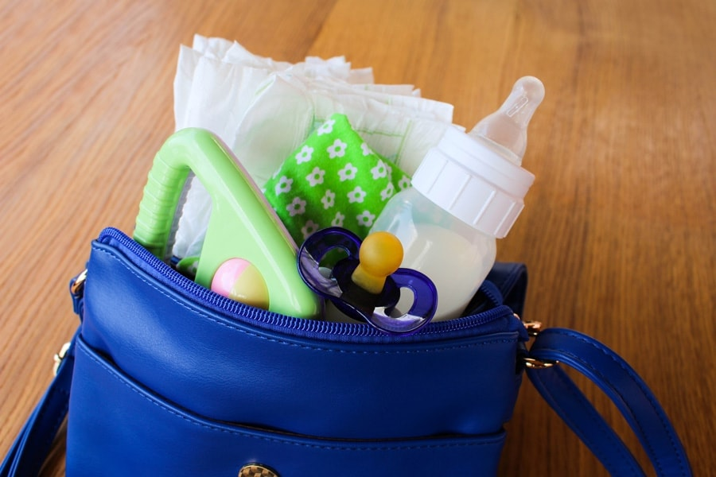Теперь печенька, яблочко, водичка и личные вещи - "живут" отдельно!
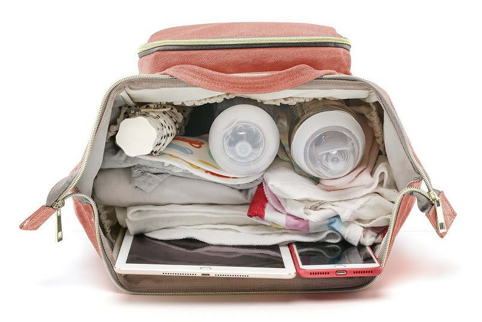И даже салфетки отдельно?
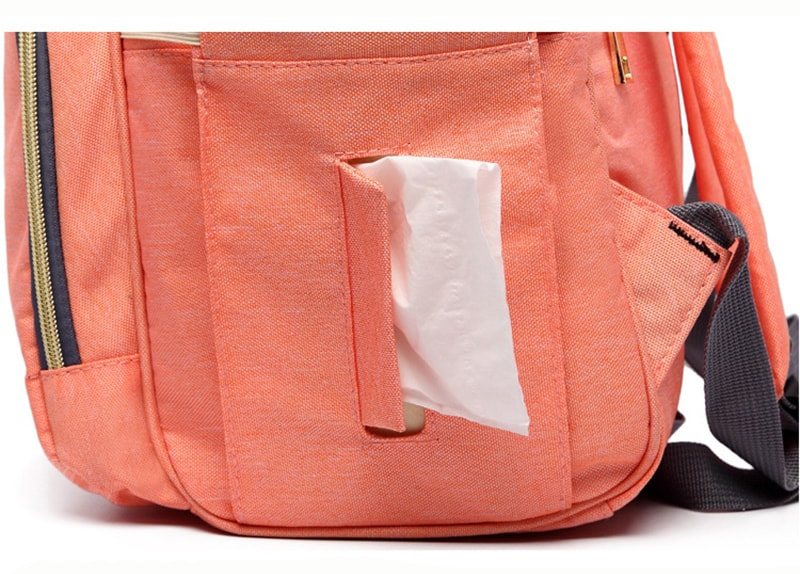А для телефона есть что-то?
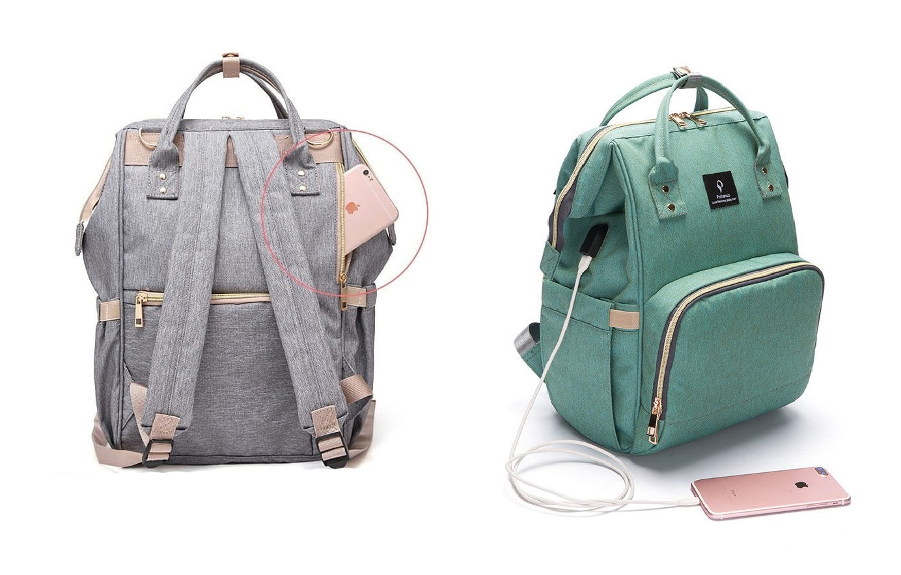А если дождь пойдет?
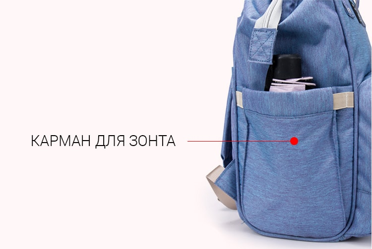А я "смесь" даю ребенку
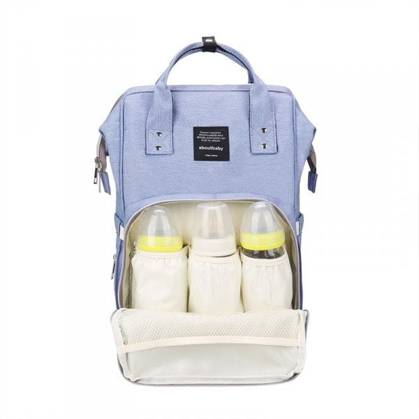Так, интересненько. А что я еще могу положить?
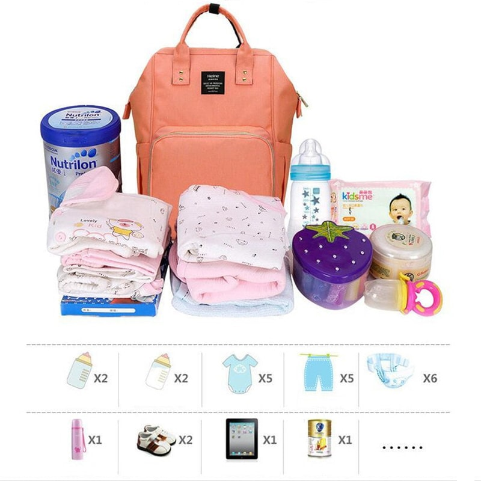Вот это да! А как же достать вещи снизу?
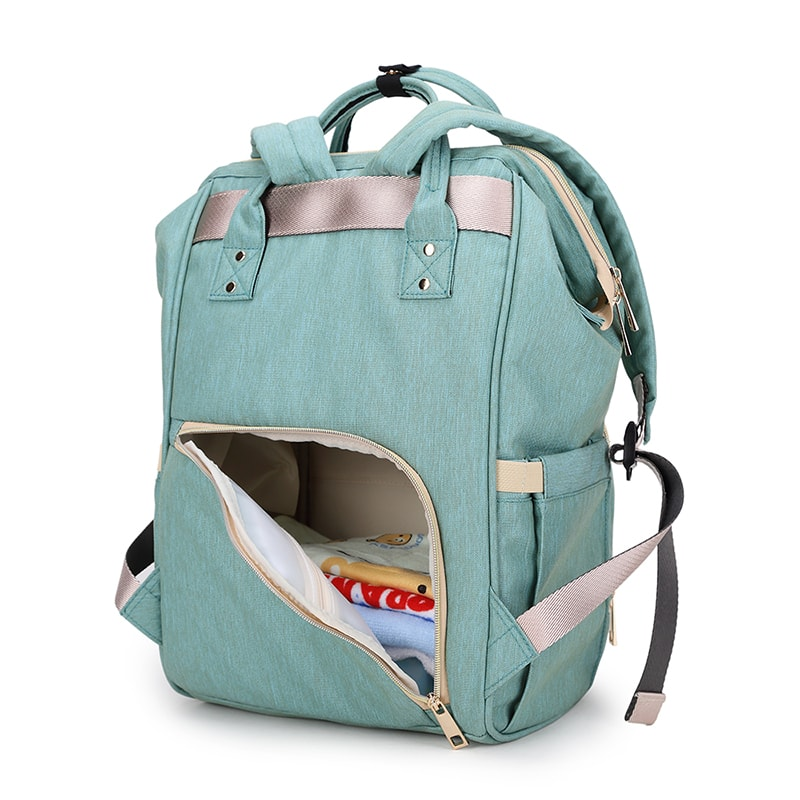А качество хоть хорошее?
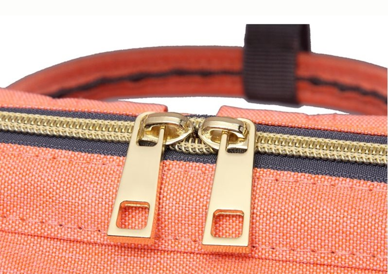Кому подойдет эта сумка-рюкзак?
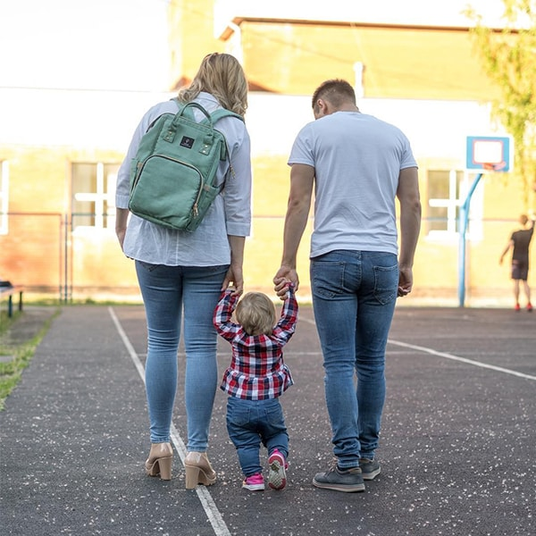Доступные расцветки
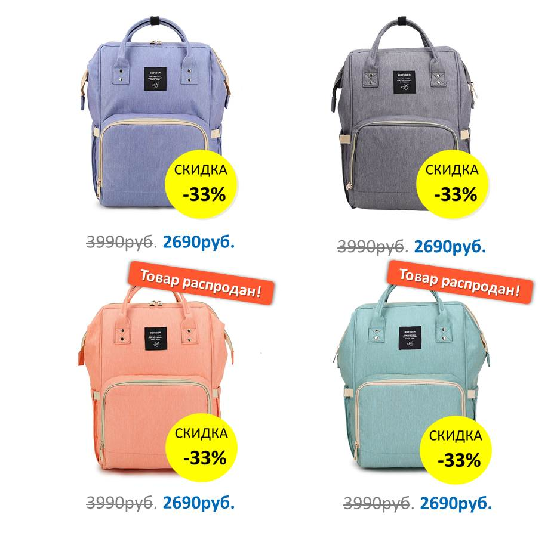И это ещё не все!
Только у нас при заказе второго рюкзака вы получаете дополнительную скидку - 22% Экономия 600руб.
Все еще думаете, нужен ли мне такой рюкзак? Почитайте отзывы довольных покупателей.
Отзывы
-
Рюкзaком полностью довольна! Брала серый себе и сиреневый сестре. Моему пупсу год и два месяца. Все нужные вещи легко помещаются. Думала будет громоздкий, но он норм)